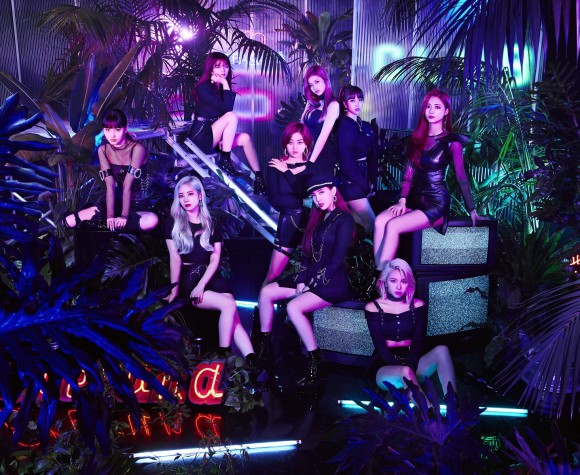

『いい音楽で一度、素晴らしいパフォーマンスで二度魅了させる』アジア発9人組ガールズグループ『TWICE』（読み方：トゥワイス）。2017年6月28日に「#TWICE」で日本デビュー。 10代を中心とした幅広い層にも圧倒的な支持と社会現象を巻き起こしながら、デビューした年から3年連続、紅白歌合戦にも出演を果たす。 2019年3月6日（水）に『デビューにして最強ベストアルバム「#TWICE」』の第二弾作品「#TWICE2」（ハッシュタグ トゥワイス ツー）をリリースし、オリコンウィークリーランキングで初登場1位を獲得！ また初週売上も9/24付『BDZ』での自己最高18.1万枚を上回り、自身初の初週20万枚を突破。（現在は35万枚を突破） 「海外⼥性アーティストによるアルバム初週20万枚超え」は7年3ヵ月ぶりとなる。
さらにその年の春には日本デビューしてからの夢であったドームツアーを開催！本国デビューから最速での東京ドーム公演を実施、海外アーティストとして日本史上最速記録更新の快挙、韓国でデビューしたガールズグループとしては初のドームツアーの実施となった！3都市5公演で22万人動員させ大成功をおさめ、TWICE第2章がスタート！ 2020年初となるシングル、TWICE JAPAN 6th SINGLE 『Fanfare』（ファンファーレ）を7月8日（水）にリリースし、最新オリコン週間シングルランキングにて初登場1位を獲得！ そして9月16日（水）に最強ベストアルバムの第三弾、『#TWICE3』（読み：ハッシュタグ トゥワイススリー）をリリースしたTWICEは9月22⽇発表の最新「オリコン週間アルバムランキング」で初登場1位を獲得！ 今回「通算7作目の1位」を記録したことで、「アルバム通算1位獲得作品数」の海外⼥性アーティスト歴代1位タイとなった。「通算7作以上のアルバム1位」は、海外アーティスト史上3組目。 2021年3月6日にはNTTdocomo新体感ライブCONNECT Special Live 『TWICE in Wonderland』を開催！ 5月12日（水）には2021年初となるTWICE JAPAN 8th SINGLE『Kura Kura』をリリース！
2021.5.20 TWICE「Kura Kura」Member Making Video Unit.2が公開！
2021.5.19 7/28 (水)発売TWICE JAPAN 3rd ALBUM「Perfect World」購入特典に関して
2021.5.18 InstagramにTWICE「Kura Kura Challenge!」ARフィルターが登場！
2021.5.12 フジテレビ「突然ですが占ってもいいですか？2時間スペシャル」出演決定